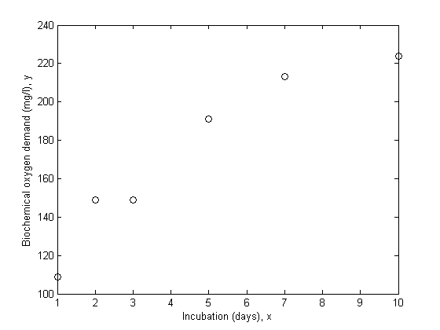
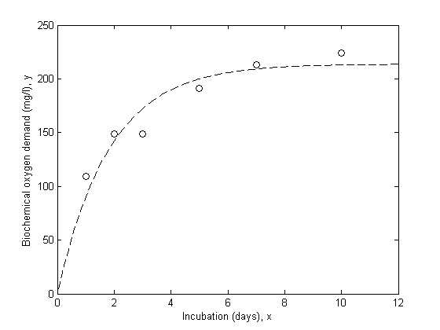
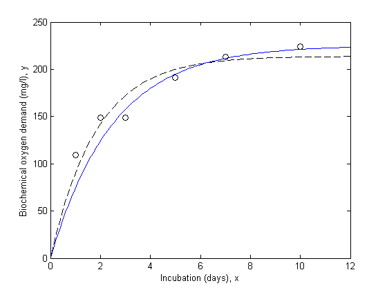
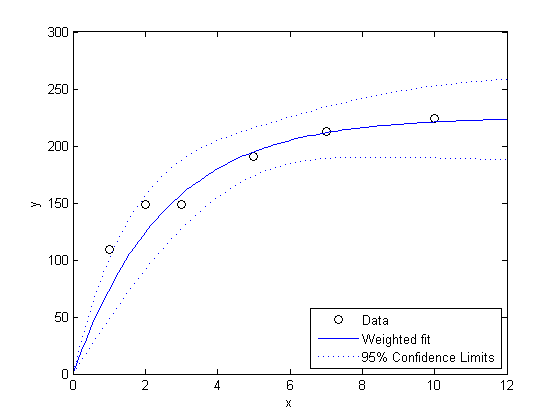
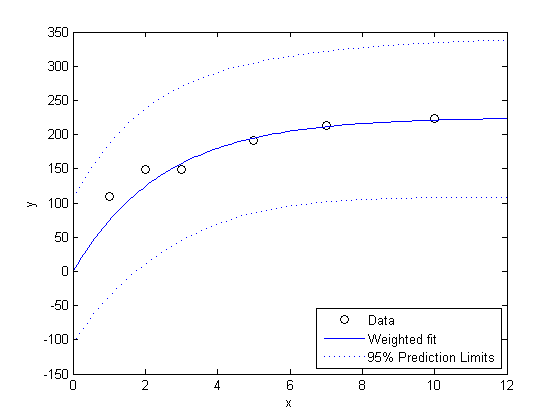
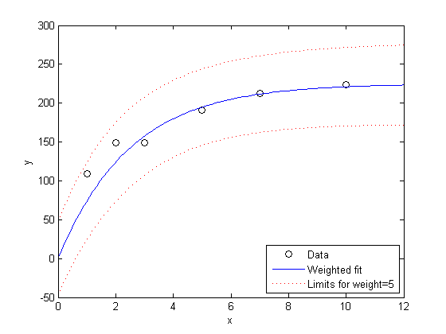
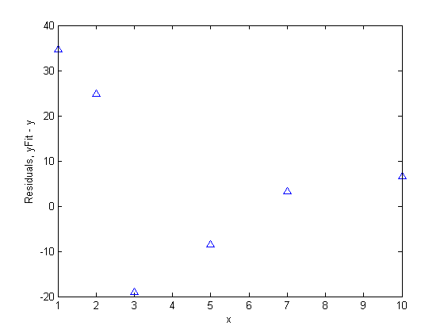

Weighted Nonlinear Regression
This example shows how to fit a nonlinear regression model for data with nonconstant error variance.
Regular nonlinear least squares algorithms are appropriate when measurement errors all have the same variance. When that assumption is not true, it is appropriate to used a weighted fit. This example shows how to use weights with the NonLinearModel.fit function.
Contents
Data and Model for the Fit
We'll use data collected to study water pollution caused by industrial and domestic waste. These data are described in detail in Box, G.P., W.G. Hunter, and J.S. Hunter, Statistics for Experimenters (Wiley, 1978, pp. 483-487). The response variable is biochemical oxygen demand in mg/l, and the predictor variable is incubation time in days.
x = [1 2 3 5 7 10]'; y = [109 149 149 191 213 224]'; plot(x,y,'ko'); xlabel('Incubation (days), x'); ylabel('Biochemical oxygen demand (mg/l), y');
We'll assume that it is known that the first two observations were made with less precision than the remaining observations. They might, for example, have been made with a different instrument. Another common reason to weight data is that each recorded observation is actually the mean of several measurements taken at the same value of x. In the data here, suppose the first two values represent a single raw measurement, while the remaining four are each the mean of 5 raw measurements. Then it would be appropriate to weight by the number of measurements that went into each observation.
w = [1 1 5 5 5 5]';
The model we'll fit to these data is a scaled exponential curve that becomes level as x becomes large.
modelFun = @(b,x) b(1).*(1-exp(-b(2).*x));
Just based on a rough visual fit, it appears that a curve drawn through the points might level out at a value of around 240 somewhere in the neighborhood of x = 15. So we'll use 240 as the starting value for b1, and since e^(-.5*15) is small compared to 1, we'll use .5 as the starting value for b2.
start = [240; .5];
Fit the Model without Weights
The danger in ignoring measurement error is that the fit may be overly influenced by imprecise measurements, and may therefore not provide a good fit to measurements that are known precisely. Let's fit the data without weights and compare it to the points.
nlm = NonLinearModel.fit(x,y,modelFun,start); xx = linspace(0,12)'; line(xx,predict(nlm,xx),'linestyle','--','color','k')
Fit the Model with Weights
Notice that the fitted curve is pulled toward the first two points, but seems to miss the trend of the other points. Let's try repeating the fit using weights.
wnlm = NonLinearModel.fit(x,y,modelFun,start,'Weight',w) line(xx,predict(wnlm,xx),'color','b')
wnlm =
Nonlinear regression model:
y ~ b1*(1 - exp( - b2*x))
Estimated Coefficients:
Estimate SE tStat pValue
b1 225.17 10.7 21.045 3.0134e-05
b2 0.40078 0.064296 6.2333 0.0033745
Number of observations: 6, Error degrees of freedom: 4
Root Mean Squared Error: 24
R-Squared: 0.908, Adjusted R-Squared 0.885
F-statistic vs. zero model: 696, p-value = 8.2e-06
 The estimated population standard deviation in this case describes the average variation for a "standard" observation with a weight, or measurement precision, of 1.
wnlm.RMSE
ans = 24.0096
An important part of any analysis is an estimate of the precision of the model fit. The coefficient display shows standard errors for the parameters, but we can also compute confidence intervals for them.
coefCI(wnlm)
ans =
195.4650 254.8788
0.2223 0.5793
Estimate the Response Curve
Next, we'll compute the fitted response values and confidence intervals for them. By default, those widths are for pointwise confidence bounds for the predicted value, but we will request simultaneous intervals for the entire curve.
[ypred,ypredci] = predict(wnlm,xx,'Simultaneous',true); plot(x,y,'ko', xx,ypred,'b-', xx,ypredci,'b:'); xlabel('x'); ylabel('y'); legend({'Data', 'Weighted fit', '95% Confidence Limits'},'location','SouthEast');
Notice that the two downweighted points are not fit as well by the curve as the remaining points. That's as you would expect for a weighted fit.
It's also possible to estimate prediction intervals for future observations at specified values of x. Those intervals will in effect assume a weight, or measurement precision, of 1.
[ypred,ypredci] = predict(wnlm,xx,'Simultaneous',true,'Prediction','observation'); plot(x,y,'ko', xx,ypred,'b-', xx,ypredci,'b:'); xlabel('x'); ylabel('y'); legend({'Data', 'Weighted fit', '95% Prediction Limits'},'location','SouthEast');
The absolute scale of the weights actually doesn't affect the parameter estimates. Rescaling the weights by any constant would have given us the same estimates. But they do affect the confidence bounds, since the bounds represent an observation with weight 1. Here you can see that the points with higher weight seem too close to the fitted line, compared with the confidence limits.
While the predict method doesn't allow us to change the weights, it is possible for us to do some post-processing and investigate how the curve would look for a more precise estimate. Suppose we are interested in a new observation that is based on the average of five measurements, just like the last four points in this plot. We could reduce the width of the intervals by a factor of sqrt(5).
halfwidth = ypredci(:,2)-ypred; newwidth = halfwidth/sqrt(5); newci = [ypred-newwidth, ypred+newwidth]; plot(x,y,'ko', xx,ypred,'b-', xx,newci,'r:'); xlabel('x'); ylabel('y'); legend({'Data', 'Weighted fit', 'Limits for weight=5'},'location','SouthEast');
Residual Analysis
In addition to plotting the data and the fit, we'll plot residuals from a fit against the predictors, to diagnose any problems with the model. The residuals should appear independent and identically distributed but with a variance proportional to the inverse of the weights. We can standardize this variance to make the plot easier to interpret.
r = wnlm.Residuals.Raw; plot(x,r.*sqrt(w),'b^'); xlabel('x'); ylabel('Residuals, yFit - y');
There is some evidence of systematic patterns in this residual plot. Notice how the last four residuals have a linear trend, suggesting that the model might not increase fast enough as x increases. Also, the magnitude of the residuals tends to decrease as x increases, suggesting that measurement error may depend on x. These deserve investigation, however, there are so few data points, that it's hard to attach significance to these apparent patterns.